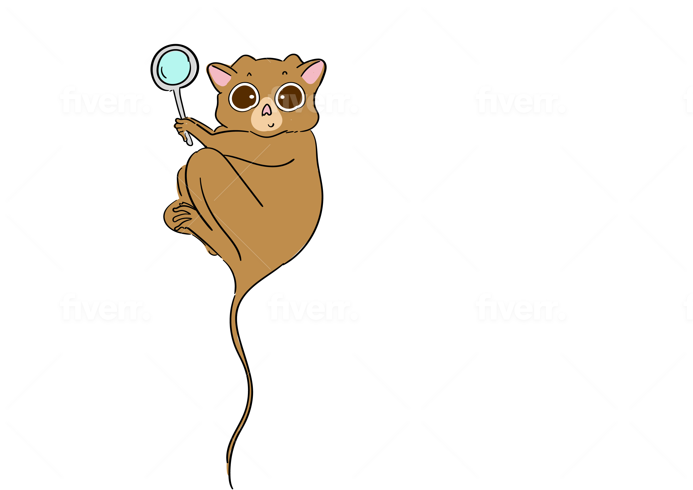

Tarsier — GBIF image search
Find reusable images of taxa (CC0, CC-BY, CC-BY-SA) on GBIF and reuse them on Wikimedia Commons.
GBIF provides free and open access to biodiversity data, including images of specimens. Tarsier searches those images for ones with an open license you can reuse, and where the license is compatible it links straight to a pre-filled Wikimedia Commons upload (a Wikimedia account is required). Search by scientific name, or by a common name — common names are resolved to a taxon via Wikidata. Issues and pull requests are welcome on GitHub.